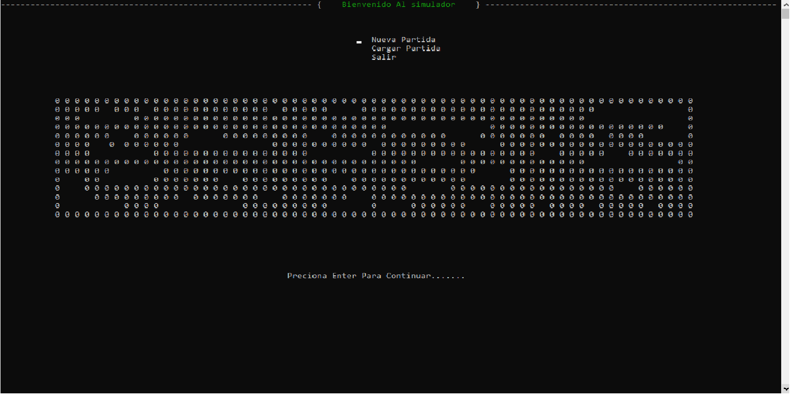
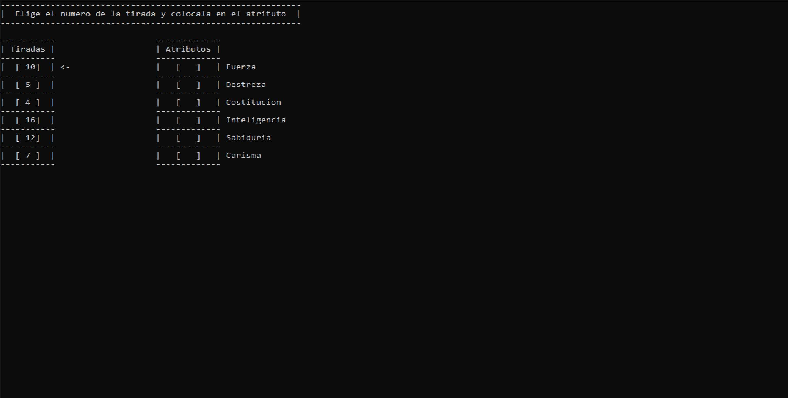
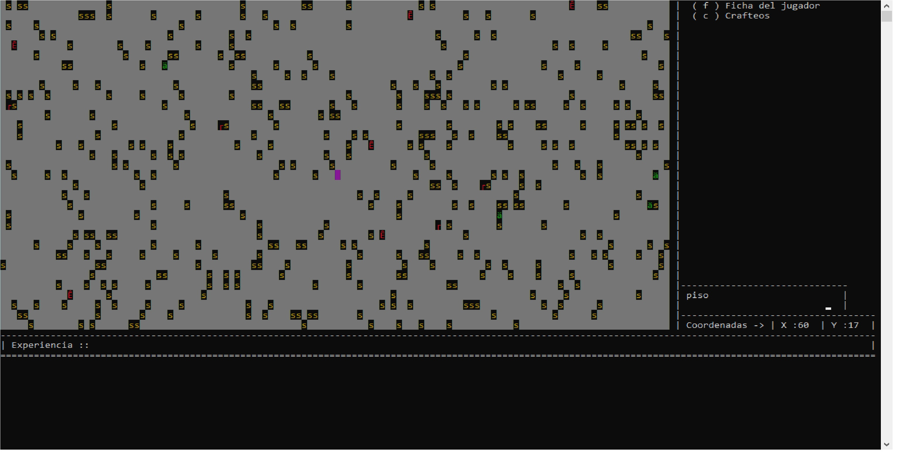
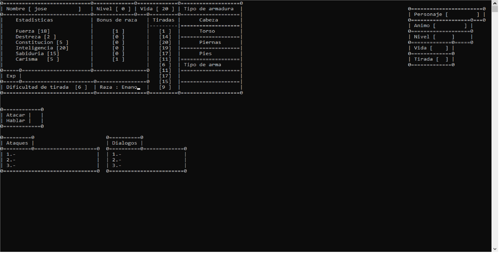
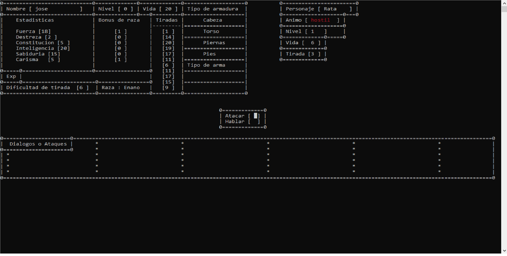

Esta es una captura de la interfaz del menu del juego

Despues de seleccionar la raza del personaje se asignan los atributos que son inspirados en D&D

El mapa se genera de forma aleatoria , crea arboles y algunos enemigos clasicos como la rata y el goblin

El jugador tiene una interfaz para ver sus estadisticas

Anterior
Siguiente
La mecanica del combate esta inspirada en el combate del Pokemon clasico